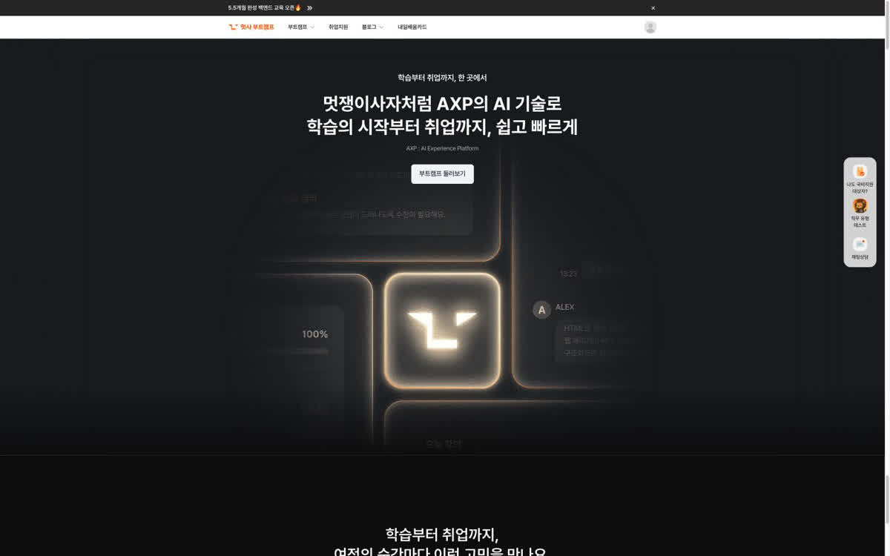

2025년 9월 ~ 현재
AI 학습 플랫폼 백엔드
플랫폼 기능: RAG 튜터, 요약노트, 수업 모니터링, 모닝브리핑, 대화 챗봇, 퀴즈, AI 이력서, 포트폴리오
강의 STT로 만든 요약노트 1,132건
쌓이기만 하던 STT를 인덱싱해 21개 과정에 발행, 2,973회 열람
- 기술
- FastAPI, PostgreSQL+pgvector, OpenAI API, SQLAlchemy(Async), SSE


문제
라이브 강의의 STT와 강의자료가 쌓이기만 하고 학습에도 수업 관리에도 쓰이지 않았습니다.
판단
학습 튜터의 목표를 답변 정확도보다 학습 효과에 두자고 제안했습니다.
한 일
- 수업 STT를 청킹·임베딩해 pgvector에 저장하는 인덱서와 RAG 학습 튜터, STT 기반 요약노트를 개발했습니다. 이후 AI 이력서 생성과 자동 검수 기능을 개발했습니다.
- 튜터는 질문 복잡도에 따라 체인(질문 개선, 답변 검증)을 골라 답합니다. 세부 규칙 중심이던 기획을 가이드라인 중심으로 바꾸자고 제안했습니다.
- 튜터가 자료 없이 수업 요약을 생성하던 문제와 DB 오류 뒤 대화 기록이 유실되던 문제를 고쳤습니다. 공유 DB 세션은 오류 직후 rollback하도록 고쳤습니다.
결과
- AI 요약노트는 21개 과정에서 1,132건이 나갔고 2,973회 열람됐습니다.